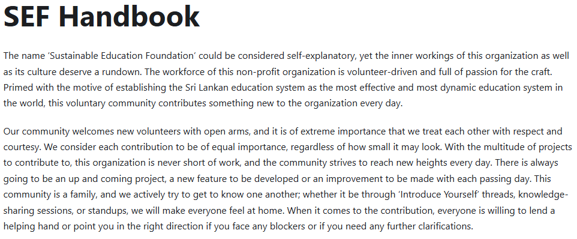
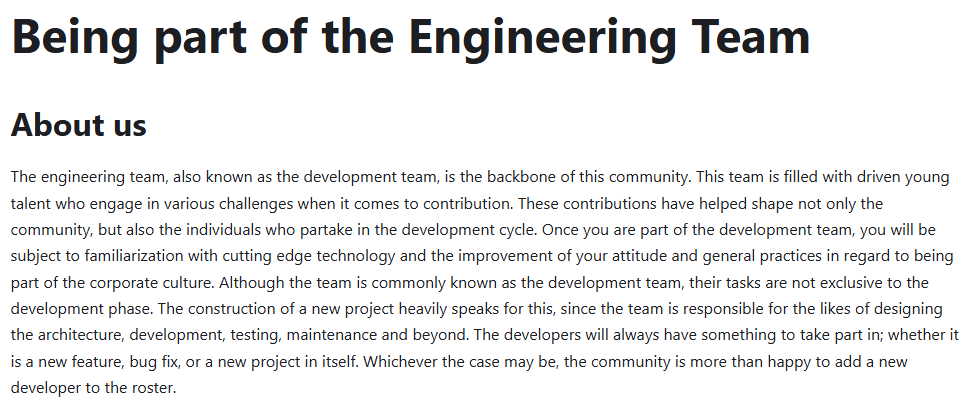
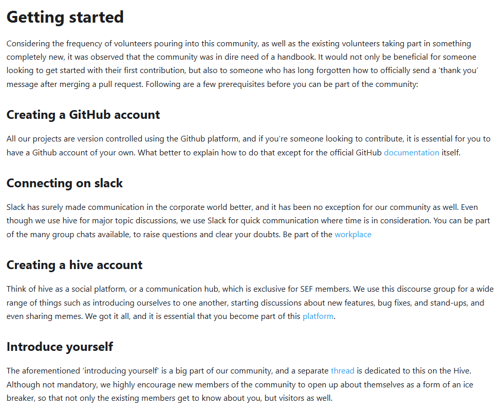
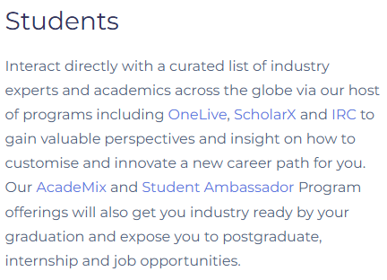
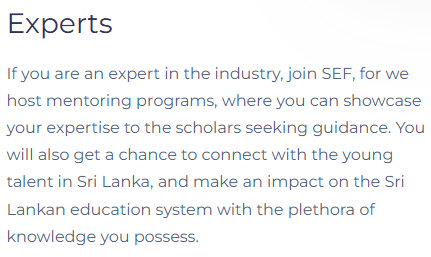
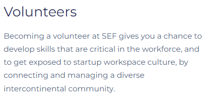

Docs that make complex APIs feel obvious.
I'm a technical writer and software engineer who lives at the intersection of both disciplines. With a BEng (Hons) in Software Engineering from the University of Westminster and hands-on experience building real-world applications, I bring genuine technical depth to the work of documentation and developer experience.
"role": "Junior Technical Writer",
"employer": "Programus Ltd.",
"based_in": "Sri Lanka",
"education": "BEng (Hons) Software Engineering, University of Westminster (Upper Second Class Honours)",
"toolchain": ["OpenAPI", "Swagger", "Postman", "Git", "Azure DevOps", "RoboHelp", "Claude Code"],
"background": "full-stack, Android & API engineering before technical writing",
"open_to_roles": ["Technical Writer", "Documentation Engineer", "Content Developer", "Information Developer", "Developer Advocate"],
"employment_type": ["Full-time", "Contract"],
"start_date": "Immediately",
"targeting": "technical writing / documentation engineering / developer relations",
"work_arrangement": ["Remote (worldwide)", "Relocation (visa sponsorship)", "On-site in Sri Lanka"],
"status": "open_to_work"
}
Overview
At Programus Ltd., I document an enterprise event and venue management platform end to end: the OpenAPI/Swagger reference for its 800+ endpoint REST API, user guides, tutorial videos, release notes, and custom client documentation. I also support clients through their API integrations, from Postman collections to working with developers on confirmed defects.
Before moving into technical writing I spent time as a software engineer across full-stack web, Android, and API layers with a focus on Java, JavaScript, React.js, Node.js, SQL, Spring Boot, and more. I've written Bash scripts and Ansible playbooks, managed Linux environments, and contributed to open source. That background means I can read a codebase, understand what developers are building, and document it without needing everything explained from scratch.
I also write about software engineering on Medium. One article, a technical explainer on Python operators, was curated and featured by Medium's editorial team, reaching 2.5K+ readers.
I'm actively looking for technical writing, documentation engineering, and developer relations roles, whether remote from anywhere, relocation where visa sponsorship is offered, or on-site in Sri Lanka. If you're building a developer-facing product and need someone who genuinely understands both sides, feel free to reach out or check out my portfolio below.
Experience
Junior Technical Writer - Programus Ltd.
- Expanded the OpenAPI/Swagger API documentation across descriptions, filters, sorting, includes, and examples; hand-wrote 2,600+ descriptions, then scaled to 7,000+ through source-verified AI-assisted audits.
- Supported client API integrations: built Postman collections for API testing, validated endpoint workflows, answered technical and business queries, and raised confirmed defects with developers.
- Wrote 55 user guides in Adobe RoboHelp, updated 24 after a client review, and authored release notes.
- Produced 10+ custom documents for 6+ enterprise clients, including a 90-page configuration guide and API guides.
- Recorded and edited 40+ tutorial videos in Premiere Pro, later taking over voiceovers.
- Built the team's AI knowledge base for internal API questions.
Trainee Software Engineer - hSenid Mobile Solutions
- Fixed bugs and shipped features across Applova's web, API, and Android kiosk applications.
- Automated builds and database backup/restore with Bash and Ansible, and wrote release notes for the QA team.
Associate Software Engineer - Sustainable Education Foundation
- Wrote the SEF volunteer handbook and site content, contributed to ScholarX v2 wireframes, and shipped fixes and features to the website.
- Hosted a Google Summer of Code awareness session and led interviews with ScholarX mentors to gather feedback.
Digital Marketing Intern - Antyra Solutions
- Directly handled two clients (Zesta tea and Resplendent Ceylon) and co-handled six clients (Lanka hospitals, Jetwing hotels, Pickme, WOW.lk, Spa Ceylon, and John Keels) running digital marketing campaigns and writing SEO friendly content.
Freelance Writer - The Nation
- Wrote three articles for the 'Free' magazine of The Nation newspaper about video games.
Case studies
Sanitized enterprise documentation samples, published under the placeholder product name "Venuix."
Venuix - event & venue management platform
What it is: A selection of user guides I wrote in my current role as Junior Technical Writer at Programus Ltd., documenting workflows and features for an enterprise event and venue management platform used by multiple enterprise clients. Venuix is a fictional name used in place of the actual product name for confidentiality purposes. These guides cover three distinct workflows. These are simplified event setup, seating chart management, and booking status configuration and it represent the type of end-to-end documentation I produce daily in a professional enterprise environment.
What it shows: Ability to document complex, multi-step administrative workflows accurately and consistently for a non-technical audience, covering varied feature complexity across a single platform, from high-level setup processes to granular configuration and conditional logic.
Read full guide - Simplified Event Setup (Quick Flow)
To set up an Event using the Simplified Event Setup Process in Venuix,
- Visit the Venuix Portal and sign in using the username and password provided to you.
- Go to the Setup Module by clicking on the Setup button.
- You may then select the Events and Products option from the left side panel.
- A list of modules will be displayed from where you may select the Events option.
- Select the Add New Event button, which will direct you to a new page.
- Under the General tab you may make the following changes:
- Provide a name for the event under the Name field (note that any fields denoted with an asterisk are mandatory, therefore should be treated as such).
- To add an image to the event, select the Upload new image here! button. A pop-up window will open where you may drag and drop or select an image from the computer.
- You may then either select Public or Private from the Event Type drop-down.
- Public events are scheduled in advance before opening to the public for bookings such as sports events, classes and courses.
- Private events on the other hand are customer driven events such as weddings and product launches, which may not be open to the general public.
- You may assign a primary venue to the event from the Primary Venue drop-down. When a booking is placed on the event, the selected venue will be booked by default.
- You may select a preferred option from the Event Category drop-down. This selection will categorize the event based on the activities that will take place (i.e., the event could be an exhibition, a children and family focused event or a community and causes focused event).
- The manager responsible for handling event specific tasks should be selected through the Event Manager drop-down.
- Any campaign monitor codes can be entered under the Event Campaign Code field. This process will link the respective campaign to the event.
- If you prefer to further categorize the event, you may do so by selecting an option from the Event Group drop-down.
- Enter any additional details regarding the event under the Description field. Please note that the description should be no less than 20 words.
- You may enter a Short Description if you wish, under the respective field. This description will be reflected on the Partner Platform as well.
- If there are any keywords related to the event, you may enter them under the Keyword field. In the process of searching for events, these keywords will help further narrow down the search results.
- Under the Event Email and Templates section you may make the following changes:
- Enter an email under the Event Email field, which ideally should be an event dedicated email address.
- If you wish, you may enter a preferred name under the Send As field. Once configured, the Send As field will be automatically populated when sending any event related emails.
- You may select the appropriate templates from the respective Email Template drop-downs. Each template will be situation specific as follows and can be used to send out custom emails to the client:
- Email Template - Booking Confirmation - Will be used to send a confirmation email to the customer once a booking is confirmed.
- Email Template - Enquiry Confirmation - Will be used to send a confirmation email to the customer once a booking enquiry is confirmed.
- Email Template - Waitlist Confirmation - Will be used to send a confirmation email to the customer once a waitlist slot is confirmed.
- Email Template - Waitlist Availability Confirmation - Will be used to send a confirmation email to the customer once the availability of a waitlist slot is confirmed.
- A facility is a space in a venue where some activity takes place, such as restaurants, meeting rooms, etc.
Adding a facility to the event
- Navigate to the Facilities section.
- Click on the Add button, which will open a new pop-up window.
- A list of facilities will be displayed.
- By default, the Primary Venue Only toggle button will be selected. If you wish, you may un-toggle this to display all the facilities.
- Select the preferred facilities and click Save to finalize and close the window.
- Click Save again to create the event and refresh the page.
Note: This step is mandatory before adding an Event Period.
- To specify the duration details of the event (how long it will last and on what dates):
Setting the Event Period
- Navigate to the Event Period section.
- Click the Add button, which will open a new pop-up window.
- You may set the date on which the event is held by selecting a date from the Date drop-down.
- You may also set the start and end times of the event from the Start Time and End Time drop-downs.
- If there are any conflicting timeslots (i.e., any overlapping events), a red flag will appear under the Capacity field. In such instances, please re-select a different date/time that will not overlap with any existing events until the red flag no longer appears.
- Under the Asset Type section, select the Facility radio button and the preferred Facility from the respective drop-down.
- You may set a preferred configuration under the Configuration field. This determines how a facility is set up for an event and what capacity can be accommodated.
- Enter the maximum capacity of the event under the Capacity field. This defines the maximum number of covers that can be accommodated by the facility.
- You may then enter the Session Code (a unique identifier for a specific timeslot).
- Enter any additional information regarding the timeslot under the Description field.
- Click Add to save and close the window, then Save again to save the new changes and refresh the page.
Note: This step is mandatory before adding a Package to the event.
- To add packages to the event:
Adding a package
- Navigate to the Packages section and click Add to open a new pop-up window.
- You may initially fill out the details regarding the full added package. The Name field will already be populated. You may change it, if you wish.
- Select a preferred Business Area and set a Price for the package, then select the Single Day radio button.
- If you'd like a waiting list, tick Enable Waitlisting, and enter a preferred Capacity plus a processing rule from the Waitlist Processing Rule drop-down.
- Select preferred options from the Package Class, Payment Term, Cancellation Policy and Sales Category drop-downs.
- You may also select an option from the Attendee Capture Profile drop-down and the relevant questionnaire from Attendee Questionnaire.
- From Sales Channel, select Corporate and/or Internet to show the channel to assisted staff flows and the portal respectively.
- Select the preferred method of delivery from Delivery Method.
- To request documents from attendees, select the preferred documents from Document Restrictions.
- To create additional packages, you may navigate to the Linked Packages section and click Add Package Type button. A new entry will be created on the linked packages table. You may select a Package Type and enter a preferred Gross Price for the linked package.
- Click Add to save and close the window, then Save to finalize setting up the event.
- Click Save to create the event (refer to Event Setup - Single Day for additional changes to the event).
Read full guide - Seating Chart in Maintenance Mode
Login to the Venuix portal using the username and password provided to you. There are two ways in which the seating chart page can be accessed,
a. Booking Module:
- Locate the relevant booking from the list (use Find Existing Booking) and Select to access the booking details.
- Navigate to the Booking Details section and select the Add button.
- A new drop-down menu will open, from where you may select the Package button.
- A new pop-up window will list down all existing packages.
- You may locate the preferred package (use Add New Package to Existing Booking) from the list, and click the corresponding Select Seats button.
- Alternatively you may edit the seating allocation for an existing package. To do so, expand the preferred package section, and click the Seat Allocation button. A new pop-up window will open, from where you may select the Edit Seats in the Venue Map button.
b. Diary Module:
- Locate the relevant booking from the diary (use Using the search panel with filters) and click on the timeslot.
- A new drop-down will open. Select the Maintenance Mode option.
Once the seating chart has been accessed, you may use the following steps to navigate through the page:
- First switch to the maintenance mode by selecting the respective toggle button from the upper right corner.
- By default, the different seating categories will be grouped by price band. You may also group the seating categories by further criteria such as booking list and block.
- You may use the arrow keys located in the middle to expand either the seating details section or the seating chart section to full width.
- The seating details section is comprised of multiple tabs and can be used to display all or specific seating arrangements such as general admission, seats, tables, boxes and accommodations.
- The search field may be used to filter specific bookings. To do this, select the search bar, enter the specific search criteria such as booking reference number, client name, contact name, package name, or notes and click the search button.
- If you wish to filter the columns in the seating details section (i.e., omit certain columns and/or add new columns), first click the Select Fields button (note that this button is only visible if the Group By option is set to Booking List).
- A new drop-down menu will display the list of columns. Check or un-check the preferred fields from the list and click Save. To reset the columns to their default state, click the Reset button located at the bottom of the drop-down menu.
- The list of bookings can also be filtered by criteria such as price band, client category, client type, allocation status, frozen status, notes and any special requests. To do this, click the Filters drop-down menu, select the preferred criteria, and click Apply. Selecting certain criteria such as price band or client category will trigger a secondary drop-down menu to appear, allowing you to further narrow down the results.
- The zoom buttons on the seating chart may be used to zoom in or out. Alternatively you may also use the mouse's scroll wheel to adjust the zoom level.
- To refresh the view, click the refresh button located next to the zoom controls.
- The Viewers section displays if any users are currently viewing the seating chart. The value highlighted in yellow displays the number of internal users, whereas the value highlighted in green displays the external users. Hovering on either option will list down the users that are currently logged in.
- Hovering over a seat will display details such as category, row, seat number and block, as well as any additional notes.
- If you wish to reserve seats for a future booking, select the preferred seats from the seating chart and click the Reserve Seats option located at the top right of the seating chart view.
- A new pop-up window will open. Enter any information related to the reservation under the designated note field and click Submit.
- A confirmation message will be displayed if the reservation process was successful. If you wish to un-reserve any seats, select any reserved seats and click the Un-reserve Seats button. Click Yes on the pop-up message that follows to confirm.
- You may un-allocate any previously allocated seats if you wish. To do so, select the preferred seats and click the Un-allocate button located at the top of the seating chart view. Select Un-allocate again in the pop-up message that follows.
- If you wish to un-allocate all seats in a booking, tick the booking reference from the seating details section and click the Un-allocate button. Select Un-allocate again in the pop-up message that follows.
- To reallocate any unassigned seats, simply drag and drop the preferred booking reference number onto the venue map. Alternatively you may tick the preferred booking reference and click the Allocate button.
Note: Using the Allocate button will automatically assign the seats starting from the top left-most available section.
- If you wish to keep certain seats allocated while performing other actions, you may use the freeze option. This prevents the selected seats from being un-allocated. To freeze seats, first select the allocated seats that you wish to keep, then click the freeze button.
- In the following pop-up window, enter any information related to the freezing under the designated note field and click Submit.
- If you wish to block certain seats from being selected during the booking process, you may mark them as unavailable. To do this, select the preferred seats, and click the Mark as Unavailable button.
- In the following pop-up window, enter any information related to the unavailability under the designated note field and click Submit.
- The audit trail feature keeps track of all actions performed under the respective venue. To access this, click the audit trail button located next to the maintenance mode toggle button.
- A new pop-up window will open. You may expand the number of items per page by scrolling to the bottom of the list and setting a preferred value from the Items per page drop-down. You may also use the arrow keys located at the bottom to navigate through the list.
- You may also filter the audit list by criteria such as price band, seat status, block and bookings. To do this, click the Filters drop-down and select the preferred criteria. A secondary drop-down will open, from where you may select the respective sub-option(s). Click Apply to filter the results.
Read full guide - Managing Booking Statuses
- Login to the Venuix portal using the username and password provided to you.
- Select the Setup module, which will direct you to a new page.
- Select the Bookings option from the left side panel. From the list of options displayed, select the Booking Statuses option.
- All booking statuses will be listed in tabular format. To search for a specific booking status, click on the search bar, enter the preferred status name and click the search button.
- You may sort the list by name by clicking on the sort button located next to the Booking Status Name header.
- Existing statuses may be edited or deleted. To access this functionality, click the ellipsis icon corresponding to the preferred status and from the drop-down menu select the preferred option:
- If the Edit button was selected, you will be directed to a new page, where you may make the necessary changes. Click Save to confirm the changes.
- If the Delete button was selected, a new pop-up window will be displayed. Click the Yes, delete it! button to confirm the deletion.
- If you wish to add a new booking status, click the Add New Booking Status button.
- Doing so will direct you to a new page. From the General tab, you may make the following changes:
- Select a preferred option from the Parent Booking Status drop-down. This will categorize the status under a higher-level booking status establishing the status hierarchy, which in turn can be used to determine the progression path.
- Provide a name for the status under the Booking Status field.
- Enabling the Reserve Stock checkbox indicates whether stock/resources will be reserved while the booking remains in the current status.
- If certain user rights are required to edit the booking while under this status, check the Require User Rights to Edit the Booking checkbox (if the currently logged in user does not have the appropriate rights, the user will only be able to open the booking in read-only mode).
- The Booking Client Restriction checkbox, when enabled, ensures that the system checks if a client is linked to the booking. If no client is selected, the booking will not be able to transition to the relevant status.
- If you wish to hide the booking from the public portal while under this status, check the Hide Booking from Portal checkbox. This feature is useful for internal-only statuses.
- Any additional details regarding the status can be entered under the Description field.
- Select the preferred Business Area(s) from the respective drop-down. If you wish to have the status for all business areas, simply click the Select All button (please note that any new business areas introduced in the future will not be automatically selected from the list, therefore should be added later on).
- Use the CalenderColor field to set a preferred color for the status. Any facility that is under this respective status will be displayed in this color.
- Save the changes by clicking the Save button. The booking status will be created.
- Under the Approval tab, you may make the following changes:
- If approval is required to change a booking to this status, tick the Requires Approval checkbox. Doing so will enable the Approved/Rejected Booking Status section.
- You may select preferred statuses from the Approved Booking Status drop-down and Rejected Booking Status drop-down respectively. Once a booking is approved or rejected, it will automatically progress to the selected status.
- To add advance approval conditions, expand the Advance Approval Conditions section, and click the Add Advance Approval Condition button.
Advance approval condition options
First provide a name for the requirement under the Requirement Name field.
The radio buttons can be used to determine how multiple conditions are evaluated:
- AND: All specified conditions must be met to trigger the approval process.
- OR: Meeting any one of the specified conditions is sufficient to trigger the approval process.
Expanding each section will present multiple conditions. Based on your preference you may tick the corresponding checkbox. If the Business Parameters section is expanded, the following conditions will be displayed:
- Sales person Belong to a specified user group(s) - triggers the approval condition if the sales person assigned to the booking belongs to one or more specified user groups. Use the Select user group(s) drop-down to select one or more user groups.
- Customer belongs to a specified client category(s) - triggers the approval condition if the client/customer associated with the booking belongs to one or more defined client categories. Use the Select client category(s) drop-down to select one or more client categories.
- Sales channel is any of specified - triggers the approval based on the sales channel through which the booking was created (i.e., online, walk-in, call center). Select the preferred sales channel(s) from the Select sales channel(s) drop-down.
- A package in the booking is of specified business area(s) - triggers the condition if the booking contains a package linked to any of the selected business areas. Use the Select business area(s) to select the preferred business area(s).
- An item in the booking is of specified item category(s) - triggers approval if any item in the booking falls under one or more specified item categories. Select preferred item category(s) from the Select Item Category(s) drop-down.
- Booking Value - used to compare the total monetary value of the booking against a specified range. Use the From and To fields to set the range.
- Discount Percentage - used to confirm if the discount applied to the booking falls within a specific percentage range. Use the From and To fields to set the range.
If the Exceptional Parameters section is expanded:
- A discount has been applied - triggers the approval if any discount is applied to the booking. Both manual and automatic discounts are valid.
- Standard package price has been changed - triggers the approval when a package's standard price is overridden or manually adjusted.
If the Approver Sequence section is expanded:
- The radio buttons may be used to specify how the approval process can be triggered:
- Any - any of the appointed users or user groups can approve the booking.
- All in parallel - all appointed users or user groups are required to approve the booking in parallel.
- All in sequence - all appointed users or user groups are required to approve the booking in sequence (i.e., once the first user or user group grants approval, the approval of the next user or user group in sequence is required for the booking to be approved).
- Use the Select user and Select user group drop-downs to select the preferred parties of approval. If both a user and a user group are selected, approval from either party will be considered valid.
If the Settings section is expanded:
- Use the Rejected Booking Status drop-down to specify the status that should automatically be assigned to a booking if it is rejected during the approval process.
- You may tick the Do not show booking conflicts in the Approval Confirmation popup checkbox if you wish to hide conflict warnings in the approval confirmation screen. Note that this will not apply when the booking is being approved into stock-allocated status.
Once the necessary changes have been made, click the Add button to confirm the changes. You may add as many approval conditions as needed. Click Save to save the approval settings.
- If the selected Parent Booking Status is either Provisional or Quotation, a new Expiry tab will be available to you. Under this tab you may make the following changes:
- To make the booking automatically expire after a certain number of days (i.e., if set to 3 days, the booking will automatically expire 3 days after being placed in this status), tick the Booking Expires in x Days checkbox, and use the - and + buttons to set a preferred number of days.
- If you wish to tie the status expiry to event dates, tick the Booking Expires After checkbox. Two new radio buttons will be presented to you:
- Event Start Date - specifies whether the status should automatically expire once the event has started.
- Event End Date - specifies whether the status should automatically expire once the event has ended.
- You may select a preferred status from the Expiry Booking Status drop-down (i.e., the booking will be moved to the selected status once it expires).
Note: This field is mandatory.
- Click Save to save the changes.
Client emails - API integration questions
What it is: Excerpts from emails I sent to client developers during their API integrations, answering their questions and clarifying how the API behaves.
What it shows: How I explain API behavior to clients, confirm or correct their understanding, suggest workarounds, and flag when something is a bug rather than expected behavior.
Read email - Reviewing a client's endpoint mapping
Hi [Client],
Thanks for the mapping, here's our confirmation on each scenario:
- Change Quantity → [update booking endpoint]. Correct as proposed.
- Remove Booked Option → [remove booked item endpoint]. Please note [cancel booking endpoint] should not be listed here, that cancels the entire booking, not a single option.
- Add new option to an already booked time slot → [update booking endpoint]. Correct as proposed.
- Change Date → [update booking endpoint], not a separate change date endpoint (that path doesn't exist). Include the booked item's ID and its new start date in the request. The end date is optional.
- Change Session → same as above, [update booking endpoint] with the new start date on the relevant booked item.
On booking status IDs: there is no fixed status ID that is the same across all environments, these are configurable per system. What is fixed is the parent status. If you need the exact status ID values for a given environment, you can retrieve them using [booking statuses endpoint].
Please let me know if you need further clarifications.
Read email - Expected behavior vs. a bug
Hi [Client],
Please see our responses below:
1) Regarding the linked packages not appearing in the responses, we checked the [package name] package, and it appears that this package does not actually have any linked packages configured, which is why no linked package data is returned. The fact that it is listed as an "Adult Package" does not necessarily mean it should have linked packages associated with it.
2) Regarding the error when updating the booking with a discount item, as the booking was already created with a discount applied, attempting to add another percentage discount on top of it is not supported. A package on a booking can only have one percentage discount at a time. This is the expected behavior and the reason you are receiving the error. To apply a different discount, you would need to remove the existing discount first before adding a new one.
Additionally, we wanted to flag that the 500 error you received is not the correct response in this scenario. The expected response should have been an HTTP 400 error with a message indicating that only one percentage discount is allowed. We will look into this error response mismatch on our end.
Please let us know if you have any further queries in the meantime.
Read email - Suggesting a workaround
Hi [Client],
The [discounted package details endpoint] does not currently support a direct filter to retrieve only public packages (e.g., filtering by event type is not supported at this stage).
To ensure you are retrieving only public event packages, we recommend using the [public packages endpoint].
If needed, there is an event ID filter available in the [discounted package details endpoint]. If you have a known list of public event IDs, you could use that as a workaround to narrow down results.
Please let us know if you have any further questions.
Read email - Pulling only changed records
Hi [Client],
As requested, here are examples demonstrating how to perform delta extraction using the API:
GET [bookings endpoint]?[updated after filter]=2030-10-30T00:00:00 GET [bookings endpoint]?[updated before filter]=2030-10-30T00:00:00
These filters allow you to retrieve only the bookings that have changed since your last extraction, rather than pulling each booking individually.
For clarity, the API also supports delta extraction using the inserted and updated audit timestamps, which can be used for more granular filtering if required.
SEF Volunteer Handbook - Organizational Overview
What it is: An introduction to the Sustainable Education Foundation written for the handbook I created during my time as Associate Software Engineer at SEF (2022-2023). This section sets the tone for the entire handbook and speaks to prospective volunteers across all backgrounds.
What it shows: Ability to write welcoming, accessible organizational content that balances professionalism with warmth.
Read excerpt - SEF Handbook Introduction
The name 'Sustainable Education Foundation' could be considered self-explanatory, yet the inner workings of this organization as well as its culture deserve a rundown. The workforce of this non-profit organization is volunteer-driven and full of passion for the craft. Primed with the motive of establishing the Sri Lankan education system as the most effective and most dynamic education system in the world, this voluntary community contributes something new to the organization every day.
Our community welcomes new volunteers with open arms, and it is of extreme importance that we treat each other with respect and courtesy. We consider each contribution to be of equal importance, regardless of how small it may look. With the multitude of projects to contribute to, this organization is never short of work, and the community strives to reach new heights every day. There is always going to be an up and coming project, a new feature to be developed or an improvement to be made with each passing day. This community is a family, and we actively try to get to know one another; whether it be through 'Introduce Yourself' threads, knowledge-sharing sessions, or standups, we will make everyone feel at home. When it comes to the contribution, everyone is willing to lend a helping hand or point you in the right direction if you face any blockers or if you need any further clarifications.

SEF Volunteer Handbook - Engineering Team Onboarding (Part 1)
What it is: The opening section of the Engineering Team chapter from the same handbook, covering who the team is and what they do.
What it shows: Ability to write onboarding content for a technical audience without losing the human element.
Read excerpt - Being part of the Engineering Team: About us
The engineering team, also known as the development team, is the backbone of this community. This team is filled with driven young talent who engage in various challenges when it comes to contribution. These contributions have helped shape not only the community, but also the individuals who partake in the development cycle. Once you are part of the development team, you will be subject to familiarization with cutting edge technology and the improvement of your attitude and general practices in regard to being part of the corporate culture. Although the team is commonly known as the development team, their tasks are not exclusive to the development phase. The construction of a new project heavily speaks for this, since the team is responsible for the likes of designing the architecture, development, testing, maintenance and beyond. The developers will always have something to take part in; whether it is a new feature, bug fix, or a new project in itself. Whichever the case may be, the community is more than happy to add a new developer to the roster.

SEF Volunteer Handbook - Engineering Team Onboarding (Part 2)
What it is: The continuation of the Engineering Team chapter, covering prerequisites for joining such as setting up GitHub, Slack, and Hive accounts, and introducing yourself to the community.
What it shows: Structured, step-by-step instructional writing broken into clear, digestible sections.
Read excerpt - Getting started
Considering the frequency of volunteers pouring into this community, as well as the existing volunteers taking part in something completely new, it was observed that the community was in dire need of a handbook. It would not only be beneficial for someone looking to get started with their first contribution, but also to someone who has long forgotten how to officially send a 'thank you' message after merging a pull request. Following are a few prerequisites before you can be part of the community:
Creating a GitHub account
All our projects are version controlled using the Github platform, and if you're someone looking to contribute, it is essential for you to have a Github account of your own. What better to explain how to do that except for the official GitHub documentation itself.
Connecting on slack
Slack has surely made communication in the corporate world better, and it has been no exception for our community as well. Even though we use hive for major topic discussions, we use Slack for quick communication where time is in consideration. You can be part of the many group chats available, to raise questions and clear your doubts. Be part of the workplace.
Creating a hive account
Think of hive as a social platform, or a communication hub, which is exclusive for SEF members. We use this discourse group for a wide range of things such as introducing ourselves to one another, starting discussions about new features, bug fixes, and stand-ups, and even sharing memes. We got it all, and it is essential that you become part of this platform.
Introduce yourself
The aforementioned 'introducing yourself' is a big part of our community, and a separate thread is dedicated to this on the Hive. Although not mandatory, we highly encourage new members of the community to open up about themselves as a form of an ice breaker, so that not only the existing members get to know about you, but visitors as well.

SEF Website - Public Facing Copy
What it is: Web copy I wrote for the main SEF website, introducing the organization to three distinct audiences. This includes students, industry experts, and volunteers, where each is addressed in their own paragraph.
What it shows: Audience segmentation, concise web copywriting, and the ability to adapt tone for different readers within a single piece.
Read excerpt - Students
Interact directly with a curated list of industry experts and academics across the globe via our host of programs including OneLive, ScholarX and IRC to gain valuable perspectives and insight on how to customise and innovate a new career path for you. Our AcadeMix and Student Ambassador Program offerings will also get you industry ready by your graduation and expose you to postgraduate, internship and job opportunities.

Read excerpt - Experts
If you are an expert in the industry, join SEF, for we host mentoring programs, where you can showcase your expertise to the scholars seeking guidance. You will also get a chance to connect with the young talent in Sri Lanka, and make an impact on the Sri Lankan education system with the plethora of knowledge you possess.

Read excerpt - Volunteers
Becoming a volunteer at SEF gives you a chance to develop skills that are critical in the workforce, and to get exposed to startup workspace culture, by connecting and managing a diverse intercontinental community.

Writing
Working with Operators in Python
A beginner-friendly technical explainer on Python operators, selected by Medium editors for the featured tech article list.
📖 2.5K views · 1.4K reads
Read on Medium ↗Interning as a Software Engineer at hSenid Mobile: Part I
A firsthand account of my software engineering internship, covering onboarding, tools, and early experiences in a professional dev environment.
📖 554 views · 77 reads
Read on Medium ↗Interning as a Software Engineer at hSenid Mobile: Part II
Continued reflections on the internship including deeper technical work and lessons learned.
📖 545 views · 70 reads
Read on Medium ↗Bright Horizons - Procedurally Generated Serious Game to Promote Learning in Individuals Affected by Trisomy-21
What it is: Excerpts from my final year undergraduate thesis, "Procedurally Generated Serious Game to Promote Learning in Individuals Affected by Trisomy-21", submitted for my BEng (Hons) in Software Engineering at the University of Westminster (2024).
What it shows: Long-form academic and technical writing, from contextualising a research problem clearly for a broad audience, to explaining complex system implementation in structured, precise language.
Read excerpt - Abstract
The special education domain caters to a multitude of individuals with varying mental and physical challenges. Individuals affected by Trisomy 21 fall under the same umbrella as individuals requiring special education. This genetic disorder is commonly referred to as Down syndrome (DS), which is a result of an extra chromosome in an individual's DNA and can cause developmental and cognitive challenges all throughout their lives. The conventional methods of educating children in third world countries, with the inclusion of Sri Lanka, shows signs of disparity towards individuals with special needs. Children affected by Trisomy 21 fall victim to the lack of tailored educational approaches.
Respective medical data shows that higher Gamma Aminobutyric Acid (GABA) levels in the brain of an individual affected by Trisomy 21 reduces neuroplasticity, which also reduces the effectiveness of learning resources provided to them. Medical data also indicate that certain game genres increase the levels of dopamine in the brains of these individuals which result in lower GABA levels for a brief period of time. Furthermore, it has been identified that individuals affected by Trisomy 21 are strong visual learners, hence the proposed solution by the author comes in the form of a serious game, which not only caters to the visual learning preferences of these individuals but also aims to reduce the GABA levels in the brain to effectively provide learning resources.
The serious game 'Bright Horizons,' uses a procedurally generated approach to level design, resulting in a unique experience for the individual each playthrough, to ensure the highest possibility of engagement. Furthermore, a regression model is used to calculate the ideal activity engagement time based on acquired medical data containing gene expression change values. Learning resources such as numbers, letters and colors are distributed throughout the gameplay loop so that individuals in consideration can actively learn while being engaged in gameplay.
Read excerpt - Problem Background (Section 1.2)
The primary objective of this project is to lay the educational foundation for children affected by Trisomy 21. This unique population faces significant challenges all throughout their educational journeys and day-to-day life. In third world countries, most of these children fail to even receive their basic education let alone consider career opportunities. This genetic disorder causes distress to both children and their respective caretakers, and addressing this issue is paramount.
It has been proven that children affected by this condition respond well to game-based learning since they are strong visual learners, as opposed to conventional learning methods. Current educational practices, especially in Sri Lanka, fail to deliver these tailored educational approaches. Serious games are met quite often in the military, government, and healthcare with extensive use in education and learning, since they are proven to be engaging and appealing to people of all social classes. Even though technologies like virtual reality (VR) are on the rise as means of education, there are limited real-life use case scenarios of serious games in the special education domain.
Users are encouraged to make mistakes while they play serious games, as the key objectives are learning, knowledge retention, understanding of new concepts, problem-solving and real-time data analysis. The significance of this research lies in its potential to improve the quality of education and the overall quality of life for individuals with Trisomy 21.
Read excerpt - System Implementation (Section 7.3)
The proposed solution in this project is comprised of two major components: the game itself and the machine learning model. The serious game, built using the Unity3D engine, uses C# for creating logical scripts. These scripts govern the various functionalities of the game - from the main menu and gameplay loop through to the end screen.
Key scripts and their functions are as follows:
- Start_Menu Script - Executed on launch; loads the main menu of the game.
- Camera_Controller Script - Ensures the camera object follows the player character as it moves.
- Player_Movement Script - Controls player movement states: idle, running, jumping, and falling. Each state is assigned an animation and a sound. The player character can only occupy one state at a time, and the sprite flips based on movement direction. Jumping is only permitted when the player is in a grounded state.
- Player_Life Script - Oversees the player life and death cycle. Upon colliding with an enemy or trap, the player loses a life and respawns at the start of the level.
- Item_Collector Script - Allows the player to collect numbers, letters, or colors scattered throughout the game world. Each collectible is assigned a collider object that detects the player's rigid body. Upon collision, the game object is destroyed and the score is incremented.
- Sticky_Platform Script - Ensures that once the player character lands on a moving platform, they remain attached as it moves. This is achieved by setting the player object as a child of the platform upon collision.
- Waypoint_Follower Script - Manages platform movement between two waypoint objects placed in the game world, creating back-and-forth motion.
- Pause_Menu Script - Switches the game's time scale between 1 (running) and 0 (paused).
- End_Menu Script - Displayed upon game completion; allows the player to return to the main menu or quit.
- Options_Menu Script - Manages user preferences including resolution, graphical presets, volume, difficulty, and learning resource preferences. Changes take immediate effect and are saved locally for future sessions.
- Level_Manager Script - Determines the number of levels to generate based on the selected difficulty level, and handles level display and completion messaging.
- Procedural_Generation Script - The most complex script in the project, responsible for generating the game world based on difficulty level. This includes creating hills and platforms with varying heights and widths, placing them randomly across the terrain, setting start and end borders, positioning the finish line in a safe zone clear of terrain elements, and distributing collectible items throughout the level.
The regression model was constructed to determine ideal activity engagement times. Medical data was sourced from four Excel sheets containing gene expression changes, which first required a processing stage to remove inconsistent columns and combine the files into a single dataset of over ten thousand entries. This dataset was loaded using the pandas library and underwent a second processing stage - replacing empty Gene ID cells with 'unknown' and converting Direction values to binary representations of 'up' and 'down'. A new column, 'Activity Engagement Time', was created by assigning randomised values between 60 and 120 seconds. The data was then split into features and targets, divided into training and testing sets, and used to train a linear regression model. The trained model predicts ideal activity engagement times and saves the output for use by the game engine.
Toolchain
Get in touch
Open to technical writer, documentation engineer, content developer, information developer, and developer advocate roles: remote from anywhere, relocation with visa sponsorship, or on-site and hybrid in Sri Lanka. Available immediately, full-time or contract.